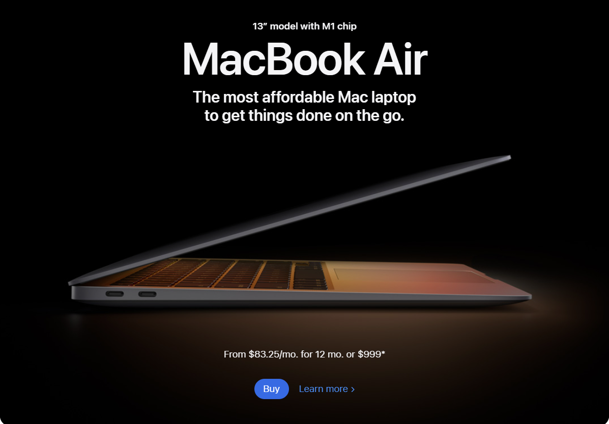

White Space
Apple
apple.com Beautiful example of whitespace use is Apple. As one of the early adopters of using whitespace on the web to showcase a product, Apple set the standard for building breathing room into their design. Not only does Apple execute active whitespace throughout the website well by placing imagery strategically to draw the users eye to specific elements down the page, but the company also uses passive whitespace to guide the user through the content without a hitch.
Hick's Law
Google keeps the decisions required to enter a keyword to a minimum by eliminating any additional content that could distract from the act of typing a keyword or require additional decision-making. It provides a quick and easy way for people to search the Web. A major contributor to the success of Google Search is its simplicity. This list of predicted keywords continues to update as you type and is designed to surface the keyword you’re likely to type before you’ve finished, therefore saving you keystrokes and time.
Rule of Thirds
Amazon
amazon.com
Amazon uses the rule of thirds strictly on their homepage. This is because, as a mass marketplace, they want their consumers to be able to empathize with their brand. By being able to show their consumers all the hottest products they offer in an organized and visually-appealing design.